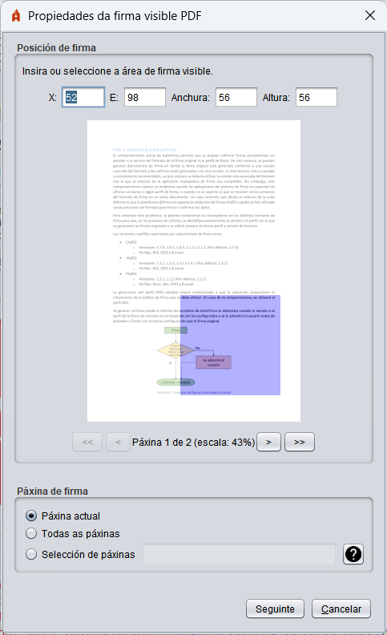
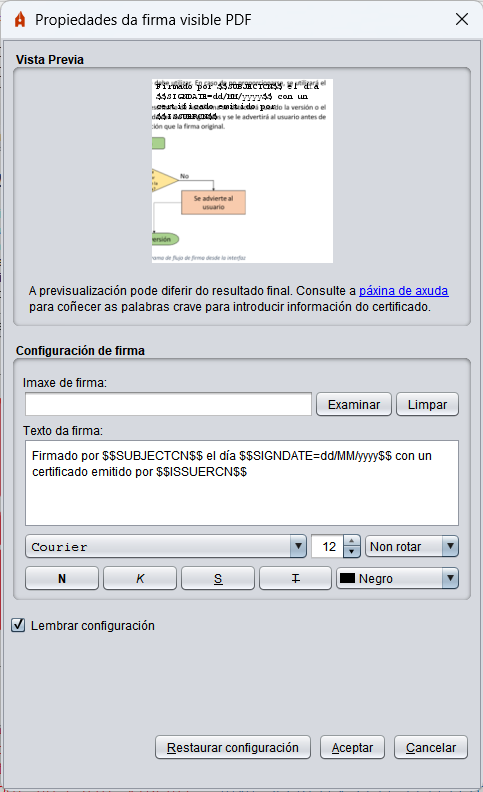
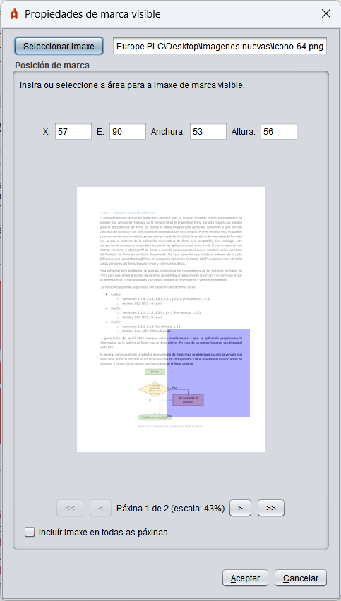

Propiedades das firmas visibles PDF
Ao habilitar a creación de firmas visibles PDF, darase ao usuario a posibilidade de seleccionar unha área de firma sobre o PDF que vaia asinar en formato PAdES.

Este menú permite utilizar o rato para seleccionar unha área rectangular dunha das páxinas do PDF.
- X: Número de píxeles no eixo X no empeza a área de firma.
- E: Número de píxeles no eixo E no empeza a área de firma.
- Anchura: Número de píxeles que se estende en horizontal a área de firma.
- Altura: Número de píxeles que se estende en vertical a área de firma.
- (Previsualización da páxina do PDF): O usuario debe facer clic sostido e arrastrar o rato sobre esta área para seleccionar a área visible de firma. As posicións e o tamaño da área de firma exprésase en píxeles con respecto á escala na que se mostra a imaxe da páxina.
- <<: Botón para desprazar a visualización á primeira páxina do PDF.
- <: Botón para desprazar a visualización á páxina anterior do PDF. Pode reproducirse este comportamento pulsando a tecla "cursor esquerdo" do seu teclado.
- >: Botón para desprazar a visualización á seguinte páxina do PDF. Pode reproducirse este comportamento pulsando a tecla "cursor dereito" do seu teclado. Se nos/nos atopamos na última páxina do PDF esta opció permitiranos crear unha páxina en branco ao final do documento na que se poderá inserir a firma.
- >>: Botón para desprazar a visualización á última páxina do PDF.
Nesta mesma xanela, na parte inferior, permítese indicar a páxina ou páxinas onde debe aparecer a firma visible. As opcións que se permiten son as seguintes:
- Páxina actual: A firma visible aparecerá na páxina que se seleccionou no selector de posición superior.
- Todas as páxinas: A firma visible aparecerá en todas as páxinas do documento.
- Selección de páxinas: Nesta opción permítese seleccionar a páxina ou rango de páxinas onde aparecerá a firma visible. Se se desexa indicar unha páxina ou varias páxinas onde estampar a firma visible, é posible indicando páxina a páxina cunha separación de comas (
1,4,7: Estámpase nas páxinas 1, 4 e 7) ou indicando un rango de páxinas a través dun guión (1-8: Estámpase nas páxinas desde a 1 ata a 8). Tamén se permite indicar as páxinas segundo a súa posición desde o final do documento. Para iso utilizarase a posición cun valor negativo (-2: Estampará a firma na penúltima páxina). Estes mecanismos pódense combinar. Por exemplo:
- 3-6, 8, 10--1: Indica que se estampará nas páxinas desde a 3 á 6, na 8 e desde a 10 á última páxina.
O botón que contén un signo de interrogación (?) permite abrir a páxina de axuda para a firma visible.
A área de sinatura desaparecera ao cambiar de pantalla do PDF. Seleccione a área para a firma visible do PDF e a seguir, pulse o botón Seguinte.
A seguir, mostrarase unha nova xanela na que o usuario poderá configurar o aspecto da firma.

Esta interface permite configurar as seguintes propiedades para a firma visible:
- Vista previa. Pode configurarse o ficheiro de imaxe pulsando sobre a previsualización da firma. Non se permiten imaxes con transparencias.
- Configuración de firma:
- Imaxe de firma: Ruta da imaxe coa rúbrica de firma. Pode seleccionarse mediante o botón Examinar e eliminarse mediante o botón Limpar. Non se admiten transparencias na imaxe e se omitirán en caso de atoparse.
- Texto de firma: Texto a mostrar no sinatura do PDF. Para a configuración do texto que se desexa mostrar na firma é posible utilizar unha serie de palabras crave que serán substituídas polos textos apropiados do titular ou emisor do certificado de firma no momento de asinar. Estas son:
- $$SUBJECTCN$$
- Nome común (CN, Common Name) dentro do X.500 Principal do titular do certificado de firma.
- $$ISSUERCN$$
- Nome común (CN, Common Name) dentro do X.500 Principal do emisor do certificado de firma.
- $$CERTSERIAL$$
- Número de serie do certificado de firma.
- $$SIGNDATE=PATRÓN$$
- Data da firma, onde PATRÓN debe indicar o formato no que debe mostrarse a data, seguindo o esquema definido por Oracle para a clase SimpleDateFormat.
- $$GIVENNAME$$
- Nome do titular (G, Given Name) declarado no certificado. Este valor podería non aparecer no certificado, nese caso, o patrón substituirase por cadea baleira.
- $$SURNAME$$
- Apelidos do titular (SN, Surname) declarado no certificado. Este valor podería non aparecer no certificado, nese caso, o patrón substituirase por cadea baleira.
- $$ORGANIZATION$$
- Organización (Ou, Organization) do titular declarada no certificado. Este valor podería non aparecer no certificado, nese caso, o patrón substituirase por cadea baleira.
- $$PSEUDONYM$$
- Pseudónimo do certificado. Este valor podería non aparecer no certificado, nese caso, o patrón substituirase por cadea baleira.
- $$OU$$
- Unidade Organizativa (OU, Organization Unit) do certificado. Este valor podería non aparecer no certificado, nese caso, o patrón substituirase por cadea baleira.
- $$OUS$$
- Listaxe de Unidades Organizativas do certificado. No caso de que houbese máis dunha, presentaríanse todas separadas por ", ". O certificado podería non ter definidas Unidades Organizativas, nese caso, o patrón substituirase por cadea baleira.
- $$TITLE$$
- Información sobre o posto ou rol do titular do certificado. Este valor podería non aparecer no certificado, nese caso, o patrón substituirase por cadea baleira.
- $$REASON$$
- Razón pola que se asina o PDF, configurada a operación de firma mediante a propiedade "signatureReason". O patrón substituirase por cadea baleira se non se estableceu este valor.
- $$LOCATION$$
- Cidade na que se asina o PDF, configurada a operación de firma mediante a propiedade "signatureProductionCity". O patrón substituirase por cadea baleira se non se estableceu este valor.
- $$CONTACT$$
- Información de contacto do asinante do PDF, configurada a operación de firma mediante a propiedade "signatureContact". O patrón substituirase por cadea baleira se non se estableceu este valor.
- Ao texto pódenselle aplicar as seguintes opcións de formato:
- Fonte de letra.
- Tamaño de letra.
- Rotación do texto.
- Estilo de fonte (Negrita, Cursiva, Subliñado ou Tachado).
- Cor do texto.
A casa "Lembrar configuración" permite gardar a configuración establecida (texto, imaxe e estilos) para utilizala nas seguintes firmas. O botón "Restaurar configuración por defecto" devolverá a configuración do panel aos valores por defecto.
Se non se desexa agregar unha firma visible ao PDF, antes de pulsar o botón asinar na pantalla de firma, asegúrese de que non se atopa seleccionada a casa "Facer a firma visible dentro do PDF".
Propiedades das marcas visibles
Ao habilitar a inserción de marcas visibles no PDF, darase ao usuario a posibilidade de seleccionar unha área sobre o PDF que vaia asinar.

Este menú permite utilizar o rato para seleccionar unha área rectangular nunha ou todas as páxinas do PDF.
- Seleccionar imaxe: Ao pulsar este botón abrirase unha xanela na que poderá seleccionar a imaxe de marca. Non se admiten transparencias na imaxe e se omitirán en caso de atoparse
- X: Número de píxeles no eixo X no que situar a marca.
- E: Número de píxeles no eixo E no que situar a marca.
- Anchura: Número de píxeles que se debe estender en horizontal a marca.
- Altura: Número de píxeles que se debe estender en vertical a marca.
- (Previsualización da páxina do PDF): O usuario debe facer clic sostido e arrastrar o rato sobre esta área para seleccionar a área no que se colocará a marca.
- <<: Botón para desprazar a visualización á primeira páxina do PDF.
- <: Botón para desprazar a visualización á páxina anterior do PDF. Pode reproducirse este comportamento pulsando a tecla "cursor esquerdo" do seu teclado.
- >: Botón para desprazar a visualización á seguinte páxina do PDF. Pode reproducirse este comportamento pulsando a tecla "cursor dereito" do seu teclado.
- >>: Botón para desprazar a visualización á última páxina do PDF.
- Incluír imaxe en todas as páxinas: Casa para seleccionar que a marca se insira en todas as páxinas do PDF.
A área de marca desaparecera ao cambiar de páxina do PDF. Seleccione a páxina, imaxe e área para a marca visible no PDF e a seguir, pulse o botón Aceptar.
Se non se desexa agregar unha marca visible ao PDF, antes de pulsar o botón asinar na pantalla de firma, asegúrese de que non se atopa seleccionada a casa "Inserir unha marca visible dentro do PDF".